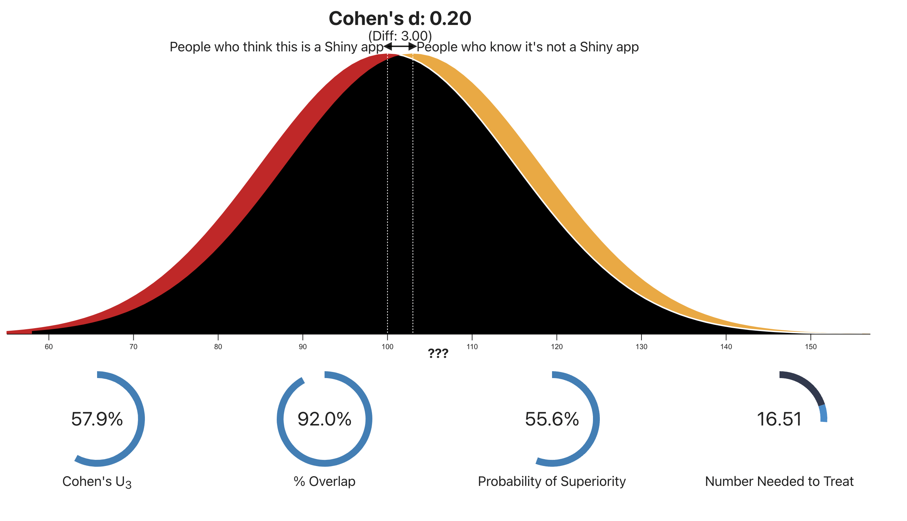
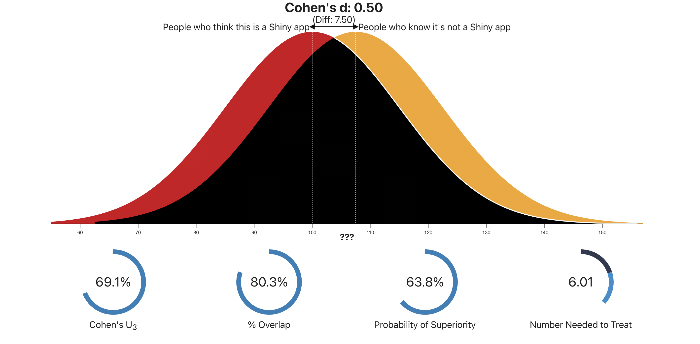
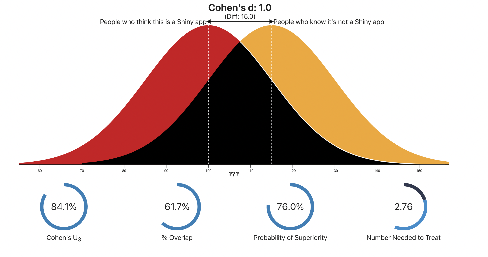
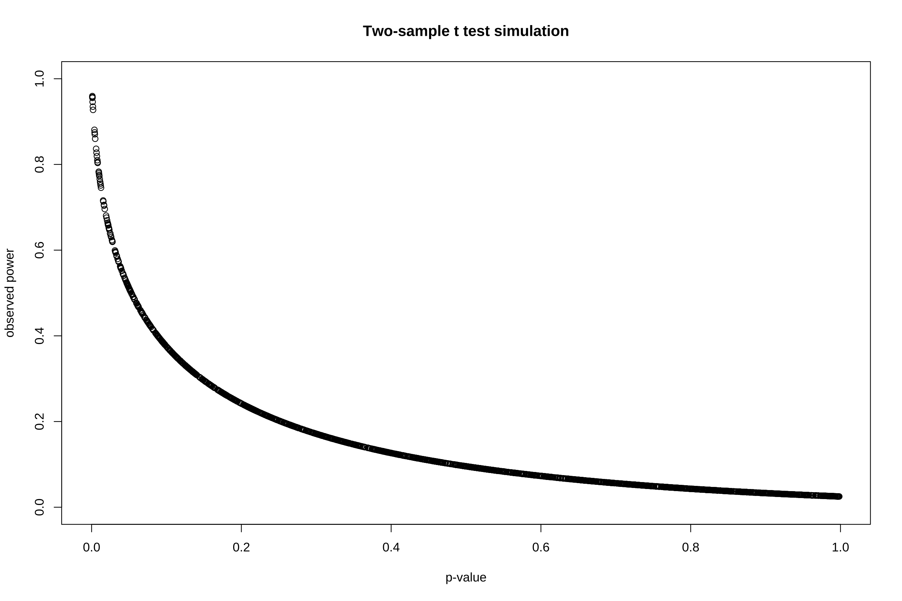

Package Version Citation
1 afex 1.1.1 @afex
2 base 4.2.2 @base
3 countdown 0.4.0 @countdown
4 easystats 0.6.0.8 @easystats
5 effectsize 0.8.3.5 @effectsize
6 emmeans 1.8.0 @emmeans
7 gt 0.8.0 @gt
8 kableExtra 1.3.4 @kableExtra
9 knitr 1.41 @knitr2014; @knitr2015; @knitr2022
10 mixedpower 0.1.0 @mixedpower
11 MOTE 1.0.2 @MOTE
12 pacman 0.5.1 @pacman
13 pwr 1.3.0 @pwr
14 report 0.5.7.9 @report
15 rio 0.5.29 @rio
16 rmarkdown 2.14 @rmarkdown2018; @rmarkdown2020; @rmarkdown2022
17 supernova 2.5.6 @supernova
18 Superpower 0.2.0 @Superpower
19 tidyverse 1.3.2 @tidyverse
20 ungeviz 0.1.0 @ungeviz
21 WebPower 0.9.4 @WebPower
22 xaringan 0.26 @xaringan
23 xaringanExtra 0.7.0 @xaringanExtra
24 xaringanthemer 0.4.1 @xaringanthemerEffect Size and Power
Princeton University
Jason Geller, PH.D.(he/him)
2023-10-30
Announcements

Announcements
- Labs
- Respond to feedback and resubmit!
Packages
Today
Effect size
Statistical Power
What is power?
Why do we care about power?
How do we determine power
Effect size
“The amount of anything that’s of research interest” (Cumming & Calin-Jageman, 2017, p.111)
Effect size refers to the strength of a relationship
- Emphasizes the size of the relationship or difference
- Practical significance
Effect size
\(R^2\)
- How much variability does a predictor explain in the outcome?
\[ R^2 = 1 - \frac{SS_{unexplained}}{SS_{Total}} = \frac{SS_{explained}}{SS_{Total}} \]
Cohen (1988):
\(R^2\) < 0.02 - Very weak
0.02 <= \(R^2\) < 0.13 - Weak
0.13 <= \(R^2\) < 0.26 - Moderate
\(R^2\) >= 0.26 - Substantial
Effect size
senses<-read.csv("https://raw.githubusercontent.com/jgeller112/PSY503-F2023/main/slides/09-Cat-Reg/data/winter_2016_senses_valence.csv")
senses_filt <- senses %>%
filter(Modality=="Taste" | Modality=="Smell")
# Create the plot
ggplot(senses_filt, aes(x = Val, fill = Modality)) +
geom_density(alpha = 0.5) +
labs(x = "Value", y = "Density") +
theme_minimal(base_size=16)Effect Size
- Is there a significance difference between the groups?
lm(Val~Modality, data=senses_filt) %>%
tidy()%>%
knitr::kable() %>%
kable_styling(font_size = 24) %>%
column_spec(5, color = "white",
background = "red")| term | estimate | std.error | statistic | p.value |
|---|---|---|---|---|
| (Intercept) | 5.4710116 | 0.0629655 | 86.889060 | 0.00e+00 |
| ModalityTaste | 0.3371123 | 0.0779327 | 4.325684 | 4.95e-05 |
- How big is the difference between means/groups?
Effect Size
Categorical variables
Comparing two levels
- Cohen’s d
- Hedges’ g (N < 20)
Three or more (ANOVA-designs)
\(\eta^2\)
\(\eta^2_p\)
Cohen’s \(d\) : 2 Sample
- Standardized mean difference
\[ d = \frac{{\mu_1 - \mu_2}}{{\sigma}_p} \]
Where:
\[ \begin{align*} \mu_1 & = \text{Mean of group 1} \\ \mu_2 & = \text{Mean of group 2} \\ \sigma_p & = \text{Pooled standard deviation} \end{align*} \]
\[s_{p} = \sqrt{\frac{(S_1^2 + S_2^2)} {2}}\]
Modality data
- Calculate Cohen’s \(d\)?
Cohen’s \(d\)
easystats
Cohen’s \(d\)
- Unequal sample sizes
\[ s_p = \sqrt{\frac{(n_1-1)s_1^2 + (n_2-1)s_2^2}{n_1-n_2-2}} \]
Cohen’s \(d\)
- Can use the t value provided in output!
\[ d = 2 \times \frac{t}{\sqrt{N_1 + N_2 - 2}} \]
Hedges’ \(g\)
- Use if sample size is small ( < 20)
\[ g = \frac{{\bar{X}_1 - \bar{X}_2}}{{S_p}} \times \left(1 - \frac{3}{{4(N-1)}}\right) \]
Where:
\[ \begin{align*} \bar{X}_1 & = \text{Mean of group 1} \\ \bar{X}_2 & = \text{Mean of group 2} \\ S_p & = \text{Pooled standard deviation} \\ N & = \text{Total number of observations} \end{align*} \]
Hedges’ \(g\): Easystats
MOTE
Effect size interpretation
Cohen (Cohen 2013)
Small
- d = .2
Medium
- d= .5
Large
- d = .8
Effect size interpretation
- 57.9% of the treatment group will be higher than the control group (\(U_3\))
92.0% overlap
55.6% of the time a person chosen randomly from treatment group at random will have higher mean (probability of superiority)
Effect size interpretation
69.1% of the treatment group will be higher than the control group ($U_3$)
80.3% overlap
63.8% of the time a person chosen randomly from the treatment group will have higher mean (probability of superiority)
Effect size interpretation
84.1% of the treatment group will be higher than the control group ($U_3$)
61.7% overlap
76.0% of the time a person chosen randomly from treatment group will have higher mean (probability of superiority)
ANOVA: effect sizes
- eta-squared
\[\eta^{2} = \frac{\text{SS}_{\text{explained}}}{\text{SS}_{\text{total}}}\]
% of variance explained
- Cannot be easily compared between studies, because the total variability in a study \(SS_{total}\) depends on the design of a study, and increases when additional variables are manipulated
ANOVA: Effect sizes
- \(\eta_p^2\)
\[\eta_p^2 = \frac{SS_{explained}}{SS_{explained} + SS_{unexplained}}\]
% of variance explained for one effect (partailing out others)
Used with more than one factor!
ANOVA: Effect sizes
- Less biased
\[\omega^2 = \frac{SS_{model} - df_{model}\cdot MS_{error}}{SS_{total} + MS_{error}}\]
\[\omega_{p}^{2} = \frac{F - 1}{F + \ \frac{\text{df}_{\text{error}} + 1}{\text{df}_{\text{effect}}}}\]
Calculate ANOVA Effect Size in R
Note
\(\eta^2\) and \(\eta^2_p\) will be the same with one variable
- \(\eta_2\)
- \(\eta^2_p\)
# Effect Size for ANOVA (Type I)
Parameter | Eta2 | 95% CI
-------------------------------
Modality | 0.15 | [0.09, 1.00]
- One-sided CIs: upper bound fixed at [1.00].# Effect Size for ANOVA
Parameter | Eta2 | 95% CI
-------------------------------
Modality | 0.15 | [0.09, 1.00]
- One-sided CIs: upper bound fixed at [1.00].Reporting
Note
Always report effect size and CIs
The ANOVA (formula: Val ~ Modality) suggests that:
- The main effect of Modality is statistically significant and large (F(4, 400) = 17.03, p < .001; Eta2 = 0.15, 95% CI [0.09, 1.00])
Effect sizes were labelled following Field’s (2013) recommendations.
Power
Recap of NHST
Are taste words rated as more unpleasant than smell words?
- \(H_0\):There is no effect of Modality on ratings
- \(H_1\): There is an effect of Modality on ratings
Recap of NHST
A world in which \(H_1\) exists
- Two types of errors:
Power
- \(1-\beta\) : Probability rejecting null when it is false
The probability of observing a statistical significant effect, given a sample size, alpha level and a effect size of interest
- Detecting the effect when it really exists
What is common?
In psychology:
β = .20
This means we are willing to make a Type II error 20% of the time
α =.05
- This means we are willing to make a Type I error only 5% of the time (i.e., significance < .05).
Power = 1−β = .80
Note
We should really be using power of .9
What is common?
What does it mean if we say: “we compare retrieval practice to re-reading with power = .75”
- If retrieval practice is actually beneficial, there is a 75% chance we’ll get a significant result when we do this study MANY MANY TIMES
- We compare bilinguals to monolinguals on a test of non-verbal cognition with power = .35
- If there is a difference between monolinguals & bilinguals, there is a 35% chance we’ll get p < .05 IF WE DO THIS MANY MANY TIMES
Why should we care about power?
Efficient use of resources
Power analyses tell us if our planned sample size (n) is:
Large enough to be able to find what we’re looking for
Not too large that we’re collecting more data than necessary
This is about good use of our resources!
Societal resources: money, participant hours
Your resources: Time!!
Why should we care about power?
Avoid p-hacking (Simmons, Nelson, and Simonsohn 2011)
- Rate of false positive results increases if we keep collecting data whenever our effect is non-significant
Power analysis decides sample in advance
Why should we care about power?
Understand non-replication (“Estimating the Reproducibility of Psychological Science” 2015)
Even if an effect exists in the population, we’d expect some non-significant results
Power is almost never 100%
In fact, many common designs in psychology have low power (Etz & Vandekerckhove, 2016; Maxwell et al., 2015)
Why should we care about power?
Better understand null results
Non-significant result, by itself, doesn’t prove an effect doesn’t exist
- Absence of evidence \(\neq\) evidence for absence
With high power, null result is more informative
E.g., null effect of Modality on ratings with 20% power
Maybe differences & we just couldn’t detect the effect?
But: null effect of Modality on ratings with power of 90%
- Makes me more sure
Why should we care about power?
Granting agencies want them now
Don’t want to fund a study with low probability of showing anything
- e.g., Our theory predicts greater activity in Broca’s area in condition A than condition B. But our experiment has only a 16% probability of detecting the difference
- Not good!
- e.g., Our theory predicts greater activity in Broca’s area in condition A than condition B. But our experiment has only a 16% probability of detecting the difference
Why should we care about power?
Scientific accuracy!
- If there is an effect, we want to know about it!
Power analysis
Power analysis: Do we have the power to detect the effect we’re interested in? If not, what is it going to take?
Depends on:
- Sample size
- Effect size (e.g., d)
- Statistical significance criteria (α)
Power Analysis
Depends on:
- Sample size - Can control this
- Effect size (e.g., d) - Can’t control this
- Statistical significance criteria (α) - usually fixed
So:
Determine desired power
Estimate effect size(s)
Calculate the necessary sample size
Power to estimate sample size
Calculate required sample size given a) effect size (e.g., d) b) significance level (α), c) desired power.
How do we determine our effect size?
Smallest effect size of interest (SESOI) (e.g., d = 0.5) (Lakens)
A priori
Use literature to estimate effect size
Meta-analyses
Rules of thumb
Determining Power
- R
pwrWebPowerSuperpower(simulation)
- Non-R
- G*Power
WebPower
- For GLM:
n: sample size
p1: # of predictors
p2: # of predictors in reduced model
f2: effect size measure
Alpha: significance level
Power
A priori power
Modality data
- We want to conduct a similar experiment and estimate how many people we should collect to achieve a desired power of 80%
We need to convert the \(R^2\) value to \(f^2\) (alternative effect size used in multiple regression/general linear models power analyses)
\[ f^2 = R^{2}/(1 - R^{2}) \]
Power Curves
- Visualization showing power as a function sample size
#add seq
res <- WebPower::wp.regression(n = seq(10,300,50), p1 = 1, f2 = 0.2,
alpha = 0.05, power = NULL)
res_df = data.frame(n=res$n, power=res$power)
# visualize the result
ggplot(res_df, aes(n, power)) +
geom_line() +
geom_hline(yintercept=.8, color="blue") +
labs(x="Sample Size", y="Power")+
theme_minimal(base_size = 16)Power Questions
- How many people do we need for 90% power?
Power Questions
- What would be our power be if I could only collect 5 participants?
Power Questions
- What is the effect on power with varying effect sizes?
- Sensitivity analysis
Simulation
Remember the definition of power?
The probability of observing a significant effect in our sample if the effect truly exists in the population
What if we knew for a fact that the effect existed in a particular population?
- Then, a measure of power is how often we get a significant result in a sample (of our intended n)
Solution: We create (“simulate”) the data.
Monte Carlo Simulations
- Set population parameters
from already conducted studies or pilot data
Modality power analysis
Superpower
Monte Carlo Simulations
- Set population parameters
- Create a random sample from these data
- Do this multiple times
- Calculate how many times you get a significant result
- E.g., 5 out 10 times (50% power)
Monte Carlo simulations
nsims=100 # number of times we do this
power_result_vig_2 <- ANOVA_power(design_result,
nsims = nsims,
seed = 1234)Power and Effect sizes for ANOVA tests
power effect_size
anova_condition 100 0.6143
Power and Effect sizes for pairwise comparisons (t-tests)
power effect_size
p_condition_Smell_condition_Taste 81 -1.2365
p_condition_Smell_condition_Sight 27 0.5423
p_condition_Smell_condition_Touch 100 2.2923
p_condition_Smell_condition_Sound 38 -0.6831
p_condition_Taste_condition_Sight 100 1.7260
p_condition_Taste_condition_Touch 100 3.2145
p_condition_Taste_condition_Sound 31 0.6536
p_condition_Sight_condition_Touch 99 1.7906
p_condition_Sight_condition_Sound 78 -1.2538
p_condition_Touch_condition_Sound 100 -2.9425Power Curve
Achieved Power and Sample Size for ANOVA-level effects
variable label n achieved_power desired_power
1 condition Desired Power Achieved 10 100 90
Achieved Power and Sample Size for estimated marginal means
variable label n achieved_power desired_power
1 <NA> Desired Power Achieved 64 90.04 90
2 <NA> Desired Power Achieved 17 91.20 90
3 <NA> Desired Power Achieved 10 96.52 90
4 <NA> Desired Power Achieved 10 96.52 90
5 <NA> Desired Power Achieved 64 90.04 90
6 <NA> Desired Power Achieved 17 91.20 90
7 <NA> Desired Power Achieved 10 99.89 90
8 <NA> Desired Power Achieved 64 90.04 90
9 <NA> Desired Power Achieved 10 100.00 90
10 <NA> Desired Power Achieved 10 100.00 90Posthoc Power
Sometimes reviewers will ask you to conduct a post-experiment power calculation in order to interpret non-significant findings
- Do not do this!
Sample effect size not rep of population size
Adds nothing over a p-value
- p > .05 = low power (Duh!)

The Minimal Detectable Effect Size
We do not live in a perfect world
- Sometimes we cannot collect all the data we need
- Sometimes we forget to do a power analysis
Report the smallest effect size that could be detected in your study for this particular sample size
Ways to increase power
Study large effects :)
Increase sample size
Increase the significance level of \(\alpha\)
- One-sided hypotheses
Better measures
Sample size justification
| Type of justification | When is this justification applicable? |
| Measure entire population | A researcher can specify the entire population, it is finite, and it is possible to measure (almost) every entity in the population. |
| Resource constraints | Limited resources are the primary reason for the choice of the sample size a researcher can collect. |
| Accuracy | The research question focusses on the size of a parameter, and a researcher collects sufficient data to have an estimate with a desired level of accuracy. |
| A-priori power analysis | The research question has the aim to test whether certain effect sizes can be statistically rejected with a desired statistical power. |
| Heuristics | A researcher decides upon the sample size based on a heuristic, general rule or norm that is described in the literature, or communicated orally. |
| No justification | A researcher has no reason to choose a specific sample size, or does not have a clearly specified inferential goal and wants to communicate this honestly. |
More resources
- Check out power simulation video from last year when Erin was here
More complex analyses
- Linear and generalized linear mixed effects models
- Kumle, Võ, and Draschkow (2021)
References
PSY 503: Foundations of Statistics in Psychology
Cohen, Jacob. 2013. Statistical Power Analysis for the Behavioral Sciences. Routledge. https://doi.org/10.4324/9780203771587.
“Estimating the Reproducibility of Psychological Science.” 2015. Science 349 (6251). https://doi.org/10.1126/science.aac4716.
Kumle, Levi, Melissa L.-H. Võ, and Dejan Draschkow. 2021. “Estimating Power in (Generalized) Linear Mixed Models: An Open Introduction and Tutorial in R.” Behavior Research Methods 53 (6): 2528–43. https://doi.org/10.3758/s13428-021-01546-0.
Simmons, Joseph P., Leif D. Nelson, and Uri Simonsohn. 2011. “False-Positive Psychology.” Psychological Science 22 (11): 1359–66. https://doi.org/10.1177/0956797611417632.